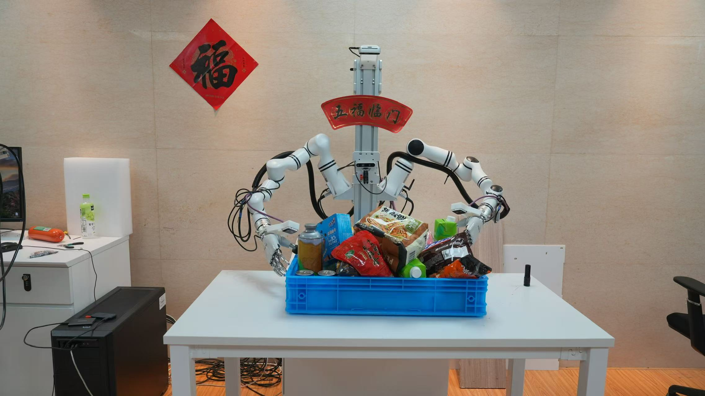
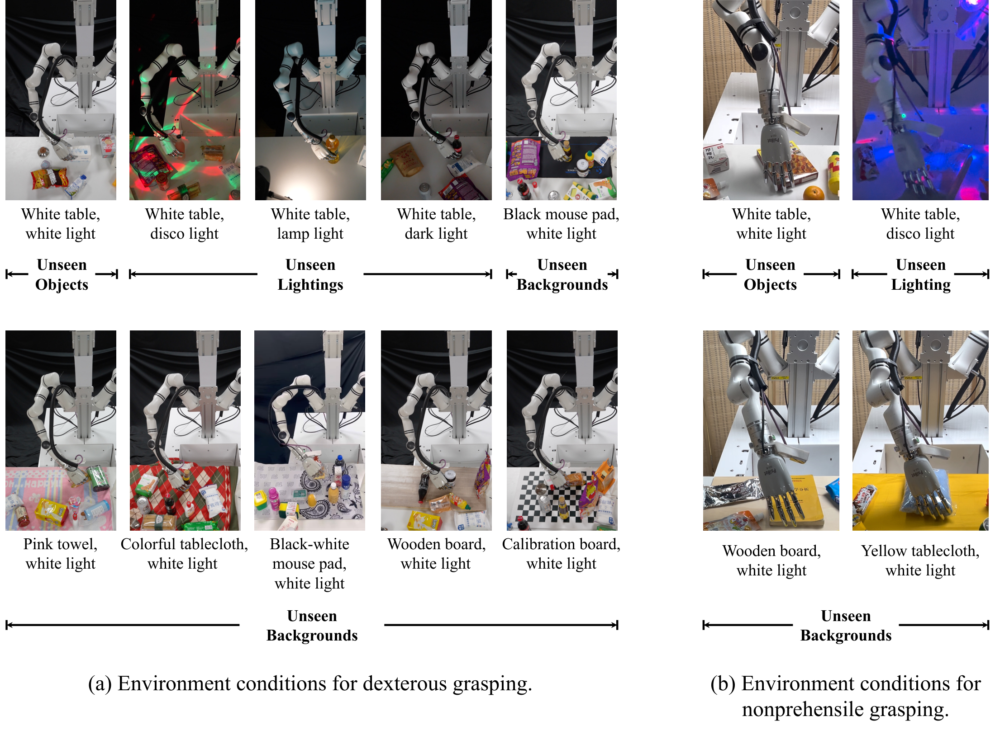
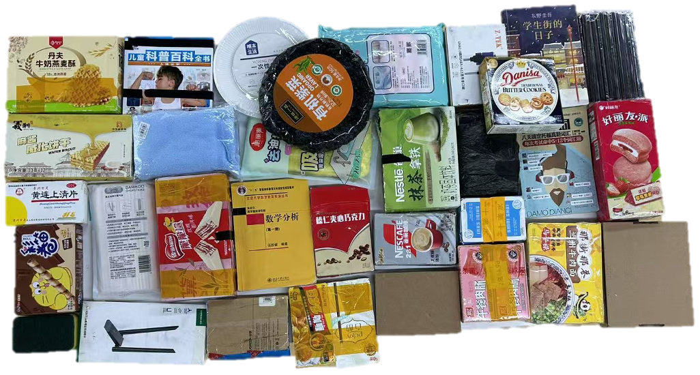
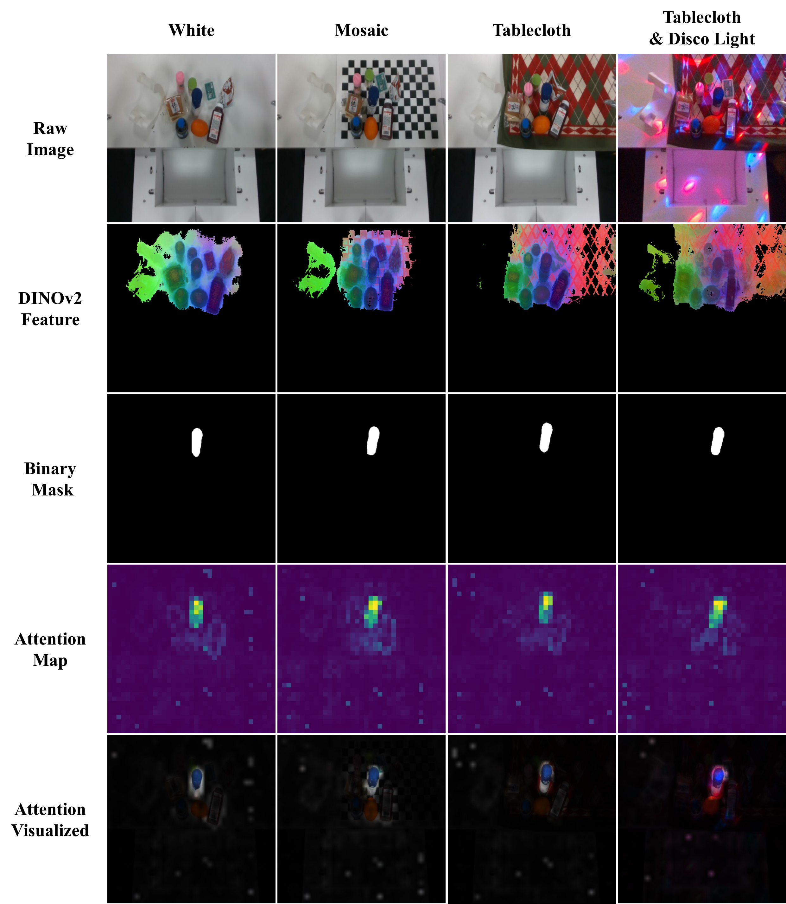

DexGraspVLA: A Vision-Language-Action Framework Towards General Dexterous Grasping
按照 OpenMOSS 内容脉络整理的证据驱动深度精读
1. 论文速览
1 一句话贡献；论文速览；关键词
提出分层 VLA 框架：上层 VLM 负责语言目标分解和目标定位，下层 diffusion controller 负责灵巧手闭环抓取。
DexGraspVLA 将开放词汇灵巧抓取拆成两个频率不同的层级：低频 VLM 负责理解自由语言指令、选择目标并检查任务是否完成；高频 diffusion controller 负责真正的多指接近、闭合与抬起。它的关键设计不是让大模型直接输出关节动作，而是用 SAM mask 与冻结的 DINOv2 特征把复杂视觉场景变成低层控制器更容易泛化的条件。对于首次复现灵巧手 VLA，它的模块边界清晰、问题定义集中，是较好的起点。
关键词：DexGraspVLA; 分层 VLA; 灵巧抓取; diffusion policy; VLM planner; 泛化抓取
DexGraspVLA 把开放词汇理解、目标定位和高自由度闭环抓取拆成两个时间尺度：低频 VLM planner 负责语义目标与任务阶段，高频 diffusion controller 围绕目标 mask 输出连续动作。论文贡献在于这种分工与完整真实系统，而不是让 VLM 直接预测关节角。

本文解读：对 DexGraspVLA 而言，这张图需要重点核对 90、DexGraspVLA 之间的关系。这是一张系统总览图。应顺着箭头确认观测、核心表示、训练目标与执行输出的先后关系，并检查论文的主要创新究竟插入了信息流的哪一段。它支撑的是 DexGraspVLA 的方法结构与模块分工，不直接证明性能提升；性能因果仍需由对应消融和真实任务结果确认。 本图的证据场景限定为：fig:teaser. We propose DexGraspVLA, a hierarchical VLA framework that reaches a 90+\ fig:teaser -10pt。

本文解读：对 DexGraspVLA 而言，这张图需要重点核对 DexGraspVLA 之间的关系。这是一张系统总览图。应顺着箭头确认观测、核心表示、训练目标与执行输出的先后关系，并检查论文的主要创新究竟插入了信息流的哪一段。它支撑的是 DexGraspVLA 的方法结构与模块分工，不直接证明性能提升；性能因果仍需由对应消融和真实任务结果确认。 本图的证据场景限定为：fig:framework.。
2. 研究问题与动机
2 核心问题；研究动机；为什么现有方法不够；替代路线为何不选；关键假设与成立条件
现有灵巧抓取方法往往在单物体、固定背景或有限类别中训练，换到杂乱桌面、未见物体和自由语言指令后容易失效。
DexGraspVLA 的动机是保留预训练视觉语言模型的语义与视觉泛化能力，只让低层策略学习接触丰富的抓取动作，从而用有限真实示范覆盖更大的物体、背景和光照分布。
有限真实示范很难覆盖未见物体、背景、光照和自由语言目标。作者把可从预训练模型继承的语义泛化交给 VLM、SAM 和 DINOv2，把必须由机器人示范学习的接触控制留给 mask-conditioned controller，从而减少端到端控制所需的数据覆盖。
3. 相关工作脉络
3 论文自述的相关工作；直接前作；替代技术路线；本文的独特位置；补充要点 5；补充要点 6；补充要点 7
论文位于三条技术线的交叉处。
OpenVLA、π0 等端到端 VLA 统一视觉语言动作，却可能在有限机器人数据上丢失视觉泛化；
DexGraspVLA 选择模块化组合：foundation models 负责语义规划、分割与表征，专用 diffusion policy 负责多指动作。
与传统 dexterous grasping 相比，它增加开放词汇目标选择；与通用 VLA 相比，它不要求大模型直接承担全部闭环控制；与纯视觉 grounding 相比，它最终必须在真实灵巧手上完成目标抓取与长程任务。
4. 方法详解
4 总体方法流程；核心表示；训练阶段；推理与部署；关键模块一；关键模块二；关键模块三；方法小结；补充要点 9
高层 planner 接收自由指令与场景图像，依次执行子任务提议、目标 bounding box 预测、抓取结果识别与任务完成检查。
低层控制器融合第三视角 RGB、目标 mask、腕部第一视角图像与 proprioception；
长程任务由高层逐物体调用低层控制器完成。
SAM 将高层输出的 bbox 转成目标 mask，tracker 在执行期间维持目标身份，低层控制器融合第三视角 RGB、目标 mask、腕部视角和 proprioception。
planner 先把自然语言拆成对象级抓取指令并产生 bounding box，SAM 将框转为 mask，tracker 在执行中维持目标身份，冻结 DINOv2 提取视觉特征，DiT action head 再生成 action chunk。任何上层目标或 mask 错误都会级联到低层控制。

本文解读：对 DexGraspVLA 而言，这张图对应一个可单独检查的论文证据。这张图把算法放回真实系统：相机视角、手型、传感器、遥操作接口和工作空间都会影响结果。复现时应先对齐这些条件，再比较模型结构。它能证明 DexGraspVLA 在该硬件配置下可运行，但不能自动说明换传感器、换控制频率或换手型后仍保持相同性能。 本图的证据场景限定为：fig:robot-platform. Our hardware platform。

本文解读：对 DexGraspVLA 而言，这张图需要重点核对 DexGraspVLA、DINOv2 之间的关系。四列改变背景与光照，而 DINOv2 feature、目标 mask 和 attention map 仍应聚焦同一目标。逐行比较可以判断鲁棒性来自冻结视觉特征、显式 mask，还是控制器偶然记住场景外观。该图支持视觉条件在环境变化下保持一致，但它主要是定性证据，仍需结合相同条件下的成功率。 本图的证据场景限定为：fig:dino-attn.。
5. 实验与结果
5 实验设置；数据与任务；评估指标；主结果；消融分析；定性结果；真实部署；证据边界
核心实验不是单个 seen-object 成功率，而是 360 个未见物体、6 个未见背景和 3 种未见光照构成的大规模组合测试。
长程语言任务还分别统计 instruction、bbox、controller 与 completion check 的错误。
nonprehensile 场景进一步测试先推至桌边再抓取的复合动作。
长程任务单独统计 instruction、bbox、controller 和 completion check 的错误，用于定位瓶颈究竟在高层语义还是低层控制。
实验覆盖 360 个未见对象以及背景、光照变化，并报告单次与多次尝试成功率。长程实验进一步把 instruction、bbox、controller 与 completion check 错误分开统计，因此不仅回答系统能否工作，也揭示不同层的责任边界。

本文解读：对 DexGraspVLA 而言，这张图对应一个可单独检查的论文证据。这张图说明训练或评估数据覆盖了哪些对象、任务、场景与具身。判断泛化结论时，应把图中的覆盖范围与测试集逐项比较，尤其关注长尾类别和训练中未出现的组合。它证明的是 DexGraspVLA 数据的覆盖与多样性，而不是单独证明模型已利用这些多样性产生泛化。 本图的证据场景限定为：fig:data-collection-env. Our data collection site。
6. 复现要点
6 最小可行复现路径；数据准备；模型与训练设置；硬件与部署要求；复现风险
优先复现单物体抓取，再接入高层 planner。
最容易出问题的是 mask 跟踪、相机与 proprioception 时间对齐、不同硬件动作维度，以及 VLM prompt 与原论文不一致导致的目标框错误。
最小复现应从单目标 mask-conditioned diffusion controller 开始，先固定目标框与 mask 验证低层抓取，再逐步接 tracker、SAM 与 VLM planner。这样才能区分动作策略失败与上层 grounding 失败。
7. 分析、局限与边界
7 最有价值的贡献；证据为何站得住；作者局限；额外边界
模块化结构使错误来源可定位，但也产生明显级联风险：VLM 选错物体、SAM 分错 mask 或 tracker 丢失目标，低层控制再强也无法恢复。
90% 以上成功率依赖特定硬件、重试策略和测试协议，不能直接外推到任意灵巧手。
分层设计带来可诊断性，也引入级联风险：目标选错、bbox 偏移、mask 丢失或完成判断错误都会使低层围绕错误条件执行。论文证明的是开放环境中的强抓取泛化，而不是消除了所有上层感知错误。
8. 组会问答准备
8 问题一；问题二；问题三；问题四；问题五；补充问题；补充要点 7；补充要点 8；补充要点 9；补充要点 10
Q1：核心创新为何不是简单的“VLM+Diffusion Policy”？
Q2：为什么冻结 DINOv2？
Q3：最强证据是什么？
Q4：系统最脆弱的环节？
Q5：最值得先复现什么？
讨论时应追问：360 个未见物体的覆盖是否足以代表开放世界；三次尝试成功率是否掩盖首次抓取不稳定；以及长程任务中 planner、mask 与 controller 哪一层最值得进一步联合优化。
9. 补充图解与附录证据

本文解读：对 DexGraspVLA 而言，这张图对应一个可单独检查的论文证据。这张图具体展示的是：fig:generalization-eval-env. Environment conditions used in our generalization evaluations of dexterous grasping (subsec:generalization-eval) and nonprehensile grasping (subsec:nonprehensile-grasping)。阅读时应把画面中的对象、阶段和对照关系与正文对应起来，而不是把它当作装饰性示例。它直接支持图注所描述的局部论点，结论范围不应超过图中给出的实验条件。 本图的证据场景限定为：fig:generalization-eval-env.。

本文解读：对 DexGraspVLA 而言，这张图需要重点核对 360、DexGraspVLA 之间的关系。左侧实物样例说明测试对象并非少量手挑案例；右侧 t-SNE 同时编码尺寸、质量、粗糙度和形状，用于检查 360 个未见物体是否覆盖多种属性组合。该图加强了泛化评估的可信度，因为测试集分布较宽；但 t-SNE 的二维分离本身不代表抓取难度或成功率。 本图的证据场景限定为：fig:tSNE.。

本文解读：对 DexGraspVLA 而言，这张图需要重点核对 32 objects 之间的关系。这张图说明训练或评估数据覆盖了哪些对象、任务、场景与具身。判断泛化结论时，应把图中的覆盖范围与测试集逐项比较，尤其关注长尾类别和训练中未出现的组合。它证明的是 DexGraspVLA 数据的覆盖与多样性，而不是单独证明模型已利用这些多样性产生泛化。 本图的证据场景限定为：fig:nonprehensile-demo-objects. The 32 objects used to collect nonprehensile grasping demonstrations。

本文解读：对 DexGraspVLA 而言，这张图对应一个可单独检查的论文证据。这张图具体展示的是：fig:dino-attn-full. The complete, uncropped version of fig:dino-attn。阅读时应把画面中的对象、阶段和对照关系与正文对应起来，而不是把它当作装饰性示例。它直接支持图注所描述的局部论点，结论范围不应超过图中给出的实验条件。 本图的证据场景限定为：fig:dino-attn-full. The complete, uncropped version of fig:dino-attn。

本文解读：对 DexGraspVLA 而言，这张图需要重点核对 Grasp all edible objects, including food and drinks.、DexGraspVLA 之间的关系。这张图说明训练或评估数据覆盖了哪些对象、任务、场景与具身。判断泛化结论时，应把图中的覆盖范围与测试集逐项比较，尤其关注长尾类别和训练中未出现的组合。它证明的是 DexGraspVLA 数据的覆盖与多样性，而不是单独证明模型已利用这些多样性产生泛化。 本图的证据场景限定为：fig:long-horizon-initial.。

本文解读：对 DexGraspVLA 而言，这张图需要重点核对 DexGraspVLA 之间的关系。这张图具体展示的是：fig:bbox.。阅读时应把画面中的对象、阶段和对照关系与正文对应起来，而不是把它当作装饰性示例。它直接支持图注所描述的局部论点，结论范围不应超过图中给出的实验条件。 本图的证据场景限定为：fig:bbox.。